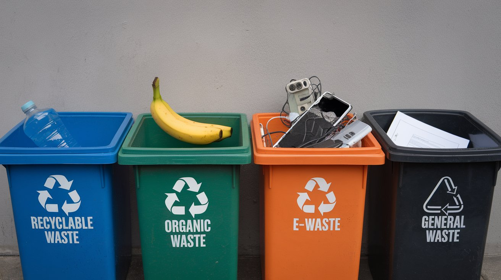

Proper waste categorization is essential for a sustainable future. It helps in reducing landfill waste, recycling materials effectively, and protecting the environment from harmful toxins.
Use the right bins for disposal: Recyclable, Organic, General, E-waste, and others. Learn more about waste management from resources like NITI Aayog and IUCN.
{{ response }}